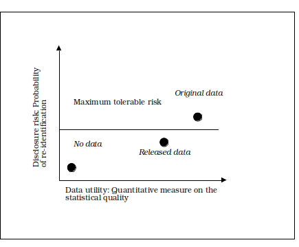

各国の国家統計機関(NSI)は、多岐にわたる信頼性が高く質の高い統計成果物を公表している。社会に豊富な統計情報を提供するという目的を達成するため、これらの成果物はできるだけ詳細なものとなる。しかし、この目的は、回答者から提供された情報の機密性を保護するというNSIの義務と相反する。統計的開示制御(SDC)または統計的開示制限(SDL)は、特定の個人や事業体に結び付けられうる機密情報を漏らすことなく統計データを公表できるよう、統計データを保護することを目指すものである。
公的統計に加えて、SDC手法が適用される分野は他にもいくつか存在し、以下のようなものが含まれる。
本ハンドブックは、統計的成果物を利用者に提供する必要性と回答者の機密性を保護する必要性のバランスをどのように取るかという問題について、NSIに対して統計的開示制御に関する技術的な指針を提供することを目的とする。統計的開示制御は、リスク管理の考え方に基づく適切なデータ公開戦略を定めるために、他の手段(行政的、法的、IT的な手段)と組み合わせるべきである。
データ公開戦略は、多種多様な利用者を対象に、さまざまなトピックを扱う多くの異なる統計的成果物を提供するものである。異なる成果物には、それぞれ異なるSDCへのアプローチと、異なる手法の組み合わせが必要となる。
表形式データの保護は、SDCの中で最も古くから確立された分野である。これは、表形式データがNSIの伝統的な成果物であったためである。ここでの目標は、静的な集計情報、すなわち表を、その対象となる特定の個人に関する機密情報が推測されないような形で公表することである。多くの場合、法的・IT的な制約が存在しないため、機密性の保護は統計的手法のみによって達成される。
ここで想定される状況は、利用者が統計的な照会(合計、平均など)を行うことができるデータベースである。連続した照会の結果として得られる集計情報から、特定の個人に関する情報が推測できてはならない。ここで用いられる手法の組み合わせは、設定や提供されるデータに応じて異なる。
近年、パソコンの普及とデータに対する公衆の需要の高まりに伴い、ミクロデータ(すなわち、各回答者について複数の変数に関する値を含むデータセット)が、大学、研究機関、利害関係団体の利用者に対して公開されるようになっている(Unece, 2006)。ミクロデータ保護はSDCの中で最も新しいサブ分野であり、近年継続的に発展を続けている。ミクロデータが自由に公開される場合、回答者の機密性を保護するために統計的開示制限手法は非常に厳格なものとなる。一方、(2.3節を参照)欧州委員会規則831/2002のような法的制約が存在する場合には、異なる程度の情報が公開されうる。
ミクロデータへのアクセスを可能にする必要性から、多くのNSIにおいてミクロデータラボラトリー(セーフセンター)の設置が進んでいる。IT的に保護された環境、法的・行政的な制約により、利用者は詳細なミクロデータを分析することができる。こうした分析の出力結果をチェックし、機密性の侵害を防ぐことも、SDC研究において発展しつつある分野の一つである。
本ハンドブックは、これらすべての種類の成果物について、統計的手法を用いて機密性を保護する方法に関する指針を提供する。
本第1章では、この分野に関わる主要な概念・定義について簡潔に紹介するとともに、機密性に関連する問題へのアプローチ方法について概観する。
開示とは、ある個人または組織が、公表されたデータを通じて、他の個人または組織について以前は知らなかった何かを認識または知得することをいう。開示リスクには、アイデンティティ開示と属性開示という2種類が存在する。
アイデンティティ開示(identity disclosure)は、回答者の身元が、機密情報を含む公表済みのデータレコードと結び付けられることによって生じる(Duncan, et al (2001))。
属性開示(attribute disclosure)は、公表されたデータ中の属性値、または公表されたデータに基づいて推定された属性値が、当該回答者と結び付けられることによって生じる(Duncan, et al (2001))。
一部のNSIは、開示リスクの「認識」についても懸念することがある。例えば、表形式の出力に小さな値が現れると、利用者は保護が(十分に)適用されていないと認識してしまう可能性がある。近年、回答率の低下やデータ品質の低下を背景に、この種の開示リスクがより重視されるようになっている。
統計的開示制御(SDC)手法とは、個人、事業者、その他の組織に関する情報が開示されるリスクを低減するための手法の総称と定義できる。SDC手法は、できる限り多くの情報を公開しつつ、開示リスクを許容可能な水準まで最小化するものである。SDC手法には摂動的手法と非摂動的手法の2種類が存在する。
摂動的手法は、機密性保護を目的として意図的に誤差の要素を導入することにより、公表前にデータを改変する手法である。非摂動的手法は、データの抑制や集約によって公開される情報量を削減する手法である。
さまざまな種類の成果物に対して、多様なSDC手法が利用可能である。表形式の出力には、規模表と度数表の2種類が存在する。
規模表では、各セルの値は、そのセルに属するすべての回答者にわたる特定の回答値の合計を表す。規模表は、例えばある地域内の特定産業に属するすべての事業者の売上高を示すなど、事業や経済に関するデータでよく用いられる。
度数表では、各セルの値は、そのセルに該当する回答者数を表す。度数表は、例えばある地域内の失業者数を示すなど、センサス(悉皆調査)や社会統計データでよく用いられる。
ミクロデータ、すなわち個票データは、他のすべてのデータ成果物の元となる形式であり、データが保存される基本的な形式である。従来、NSIは単に他の形式の成果物を導出するためにミクロデータを用いてきたが、近年ではミクロデータ自体が重要な成果物となりつつある。
NSIは、データの有用性を最大化しつつ開示リスクを最小化するような、最適なSDC手法・解決策を見出すことを目指すべきである。下図は、Duncan et al.(2001)によって開発されたR-U機密性マップであり、Rは開示リスクの定量的尺度、Uはデータ有用性の定量的尺度を表す。

グラフの左下の象限では、開示リスクは低いが有用性も低く、データが一切公開されない状態を示す。グラフの右上の象限では、開示リスクは高いが有用性も高く、原データがそのまま公開される点で示される。NSIは、基準・方針・ガイドラインに基づいて許容可能な最大の開示リスクを設定しなければならない。この開示リスクとデータ有用性の意思決定問題における目標は、データの有用性を維持しつつ、リスクを許容可能な最大閾値以下に低減する、両者のバランスを見出すことである。
本節では、NSI内のデータ提供者が、機密性リスクを管理しながらデータ利用者のニーズに応えるために取るべきアプローチについて述べる。さまざまな統計的成果物における機密性保護の問題に対応するための一般的な枠組みを、以下の5つの主要な段階に基づいて提案し、本ハンドブックがこのプロセスの各側面についてどのように指針を提供しているかを概説する。
統計的成果物に機密性保護が必要とされる主な理由は3つある。
規制・法令に関する詳細は第2章で提供される。
統計的成果物の機密性保護を検討する際には、開示リスクと適切な開示制御手法の両方にこれらの要因が影響を与えるため、データの主要な特性を理解することが重要である。これには、データの種類(全数調査か標本調査か)、標本設計、無回答率やデータのカバレッジといった品質の評価、変数とそれらがカテゴリカルか連続的か、成果物の種類(ミクロデータ、規模表、度数表など)についての把握が含まれる。統計の作成者は、何よりもまず利用者のニーズに応じて公表物を設計すべきである。したがって、統計の主要な利用者を特定し、彼らがなぜその数値を必要とし、どのように利用するのかを理解することが不可欠である。これは、成果物の設計が適切なものとなり、用いられる開示保護の程度が統計の有用性に及ぼす悪影響を最小限に抑えるために必要である。この初期分析の実施方法に関する例については、ロードマップに関する節で取り上げる。
開示リスクの評価は、上記で得た理解と、開示が生じる可能性のある状況を特定する手法とを組み合わせるものである。リスクは、(成果物の設計に関連する)可能性と、(元となるデータの性質に関連する)開示の影響の関数である。管理すべき開示リスクを明確にするためには、開示につながりうるさまざまな状況やシナリオを検討し、それらを防ぐための対策を講じる必要がある。開示シナリオは、(i)どのような情報が「侵入者」にとって入手可能であるか、(ii)侵入者がその情報をどのように用いて個人を識別するか、を記述するものである。開示リスクが何であるか、また成果物のどの要素が許容できない開示リスクをもたらすかを明確にするために、さまざまな成果物について複数の侵入者シナリオを設定すべきである。開示シナリオの策定に関する論点は、開示リスクシナリオに関する節で取り上げる。ミクロデータのリスク評価手法についてはリスク評価に関する節で、規模表・度数表それぞれの開示リスク評価に適用される規則については第4章および第5章で述べる。
リスク評価が実施された後、NSIは特定されたリスクを管理するための措置を講じなければならない。データ内のリスクは完全には排除されないが、統計的開示制御手法の適用、成果物の利用の制御、あるいはその両方の組み合わせを通じて、許容可能な水準まで低減される。アプローチの選択に際してはいくつかの要因のバランスを取る必要がある。情報損失の程度とデータの主な用途への影響を、代替案の比較に用いることができる。いかなる手法も特定の生産システムの中で実装される必要があるため、利用可能なソフトウェアや厳しい生産スケジュールの中での効率性も考慮しなければならない。ミクロデータ、規模表、度数表のリスクを低減するために用いられる統計的開示制御手法は、それぞれ第3章、第4章、第5章で取り上げる。第6章では、アクセスを制限することによって開示リスクをどのように管理できるかについて情報を提供する。
開示制御問題へのこのアプローチにおける最終段階は、手法の実装と統計の公表である。これには、使用するソフトウェアと、それに付随するオプションやパラメータの特定が含まれる。提案される指針により、データ提供者は、さまざまな種類の成果物を保護するための開示制御規則を設定し、適切な開示制御手法を選択できるようになる。最も重要な考慮事項は機密性の維持であるが、これらの決定は、合理的な時間内に利用可能な資源を用いて実装できる、明確で一貫性があり実用的な解決策の必要性にも配慮するものでなければならない。用いられる手法は、情報損失と個人情報が開示される可能性との間のバランスを取るものとなる。データ提供者は、このプロセスにおいて開放的かつ透明性を保ち、自らの決定とリスク評価プロセス全体を文書化し、後で見直せるようにすべきである。利用者は、あるデータセットが開示リスクの評価を受けたこと、および保護手法が適用されたかどうかを認識できるようにすべきである。品質確保のため、データセットの利用者には、開示制御手法の適用によって生じた改変の性質と程度について、何らかの指標が提供されるべきである。用いられた技術を明示してもよいが、公開される詳細のレベルは、利用者が開示対象データを復元できるほど十分なものであってはならない。本ハンドブックの各章では、さまざまな統計的成果物の開示リスクを評価・管理するために利用可能なソフトウェアについての詳細を提供する。
本書はまず、第2章において統計的開示制御の法的根拠となる規制の概観から始まる。ミクロデータについては第3章で、規模表については第4章で扱い、第5章では度数表に関する指針を提供する。第6章では、ミクロデータへのアクセスに関連する機密性の問題について述べる。各節では、開示リスクを評価・管理するためのさまざまなアプローチが説明され、異なるSDC手法の利点と欠点が論じられる。適切な場合には、ベストプラクティスに関する推奨事項が示される。
第7章には、統計的開示制御で用いられる統計用語の用語集が収録されている。
Duncan, G., Keller-McNulty, S., and Stokes, S. (2001) Disclosure Risk vs. Data Utility: the R-U Confidentiality Map, Technical Report LA-UR-01-6428, Statistical Sciences Group, Los Alamos, N.M.: Los Alamos National Laboratory
Trewin, D et al. (2007) Principles and Guidelines of Good Practice for Managing Statistical Confidentiality and Microdata Access, UNECE United Nations Economic commission for Europe: https://unece.org/fileadmin/DAM/stats/publications/Managing.statistical.confidentiality.and.microdata.access.pdf